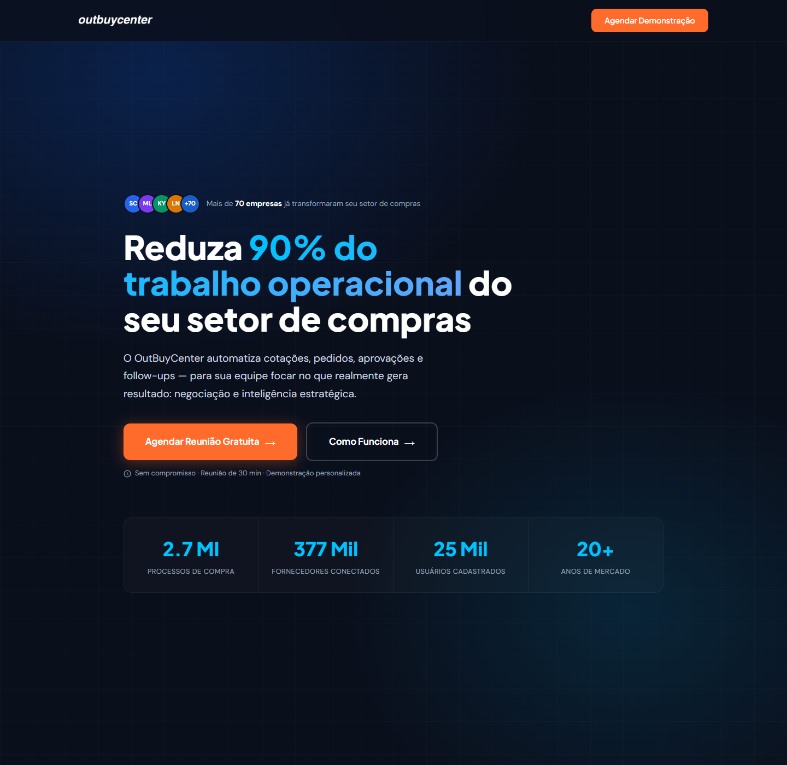
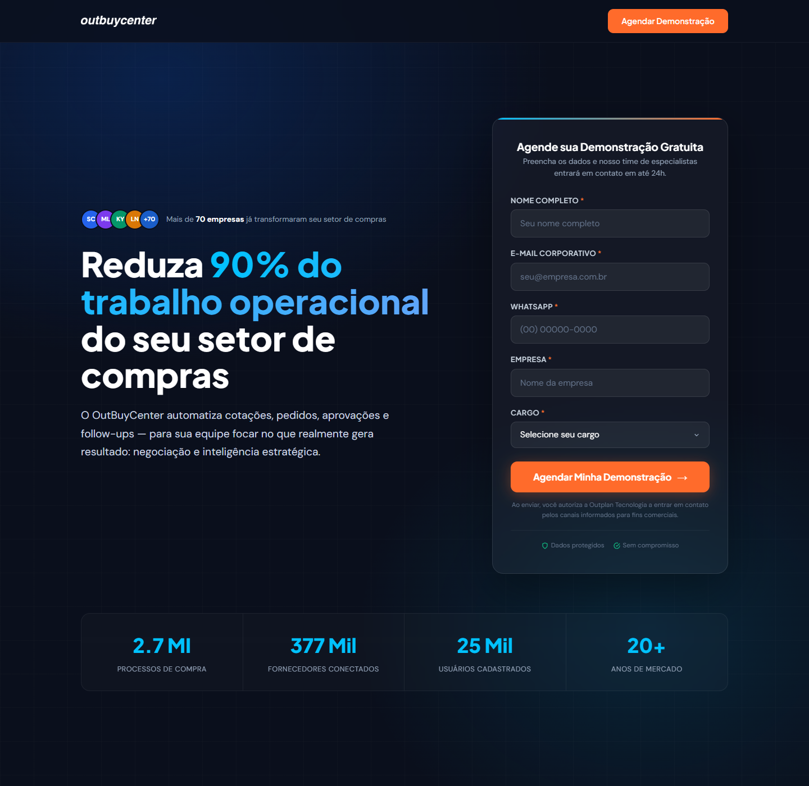
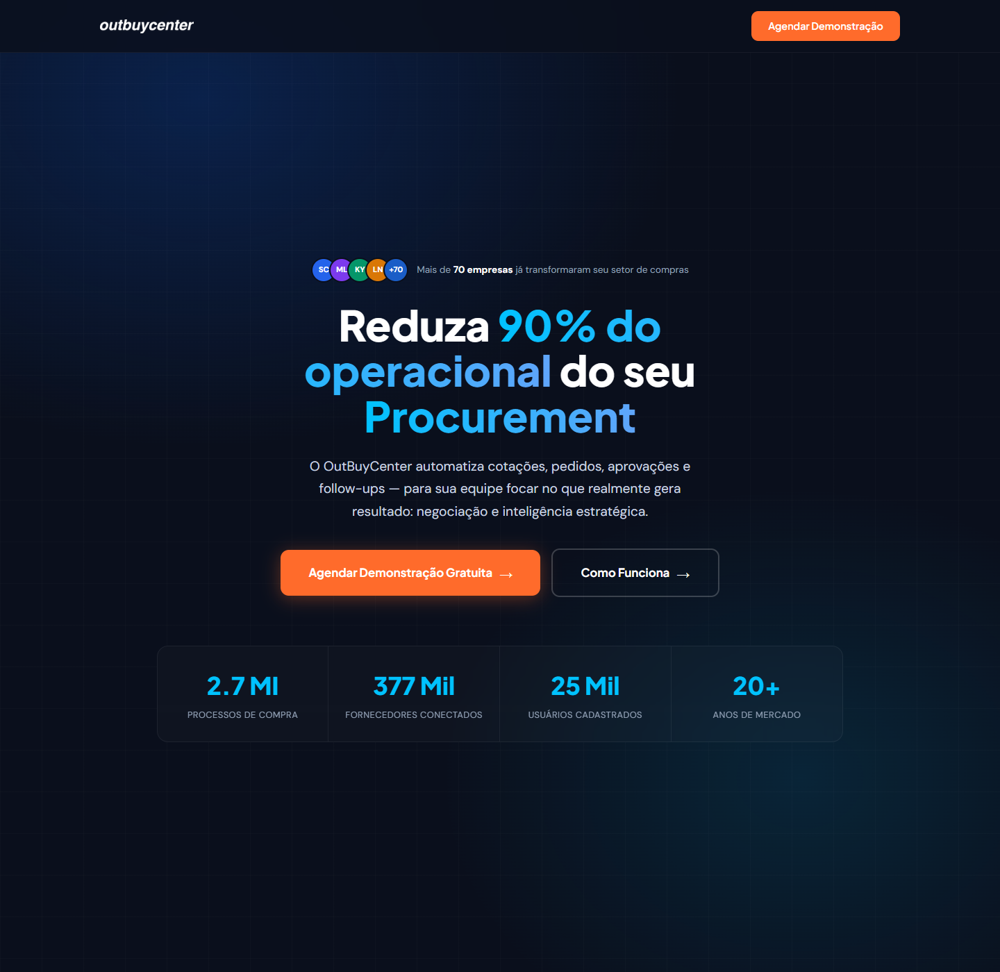
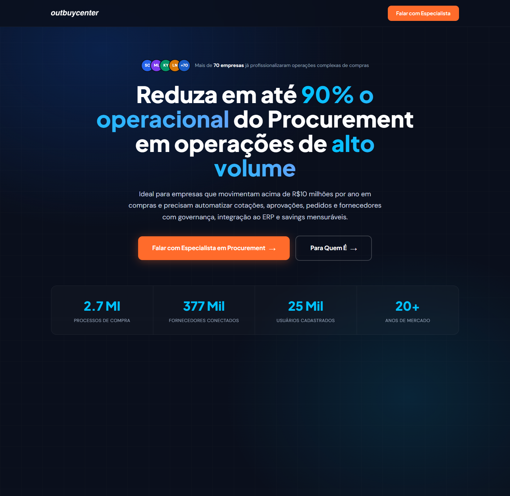
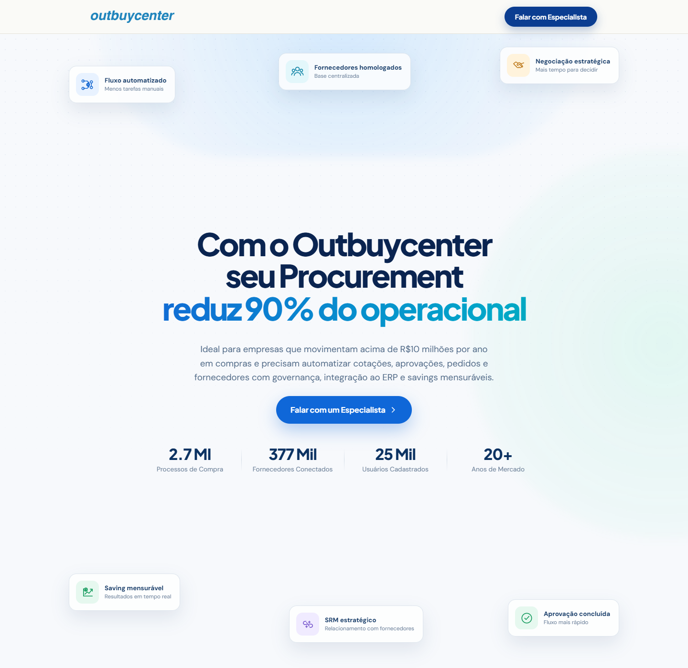
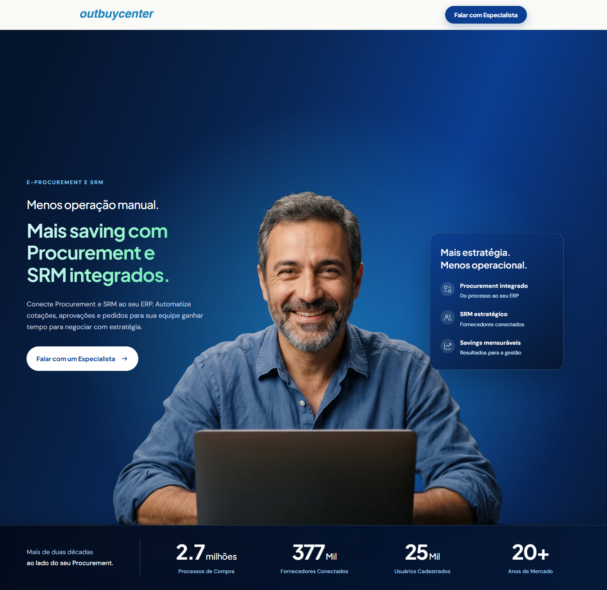

Total de acessos gerados pelos anúncios.
Histórico Google Ads
OutBuyCenter · 2026
A leitura começa no primeiro dia com atividade e usa apenas envios de formulário como lead. Outubro aparece como período parcial.
Período observado
18 fev — 6 out 2026
Conta 182-657-3172 · dados até 06/10
Leads e custo por lead
As barras mostram quantos leads chegaram. A linha mostra quanto custou, em média, cada lead.
Leads
Custo por lead
Outubro: 6 dias
Percentual dos cliques que se transformaram em lead.
Percentual das exibições que geraram um clique.
Quanto foi investido para cada mil exibições.
Desempenho mês a mês
Veja quanto foi investido, quantos leads chegaram e quanto custou cada oportunidade em cada mês.
Melhor mês
Abril
11 leads · R$ 280,19 por lead
| Mês | Investimento | Cliques no anúncio | Leads | Conversão em lead | Custo por lead | Evolução dos leads |
|---|
* Outubro considera somente os dias 1 a 6. Em setembro, 3 dos 5 leads vieram do formulário hospedado pelo Google.
Evolução das campanhas
Um resumo do trabalho realizado em cada etapa: ajustes de público e palavras-chave, testes de mensagem, novas versões de landing page e os resultados registrados.
Acompanhamento contínuo: análise diária ou, no máximo, a cada dois dias.
Palavras-chave que trouxeram resultados
Estas são as palavras que mais contribuíram para gerar leads. O Google disponibiliza termos equivalentes a 58% do investimento e 63% dos leads.
Maior volume de leads
OutBuyCenter
10 leads atribuídos
Palavras que registraram pelo menos um lead no período.
| Palavra-chave | Cliques | Investimento | Leads | Custo por lead |
|---|
Termos técnicos usados por quem procura uma solução de e-procurement, SRM ou gestão de fornecedores.
| Palavra-chave | Cliques | Investimento | Leads | Custo por lead |
|---|
Palavras ligadas a concorrentes, como Nimbi, Paradigma WBC e Proxpect.
| Palavra-chave | Cliques | Investimento | Leads | Custo por lead |
|---|
Evolução das landing pages
As versões preservadas mostram como a mensagem saiu da eficiência operacional, passou a filtrar empresas por porte e chegou à proposta atual de Procurement e SRM.
Acervo visual
6 versões
A, B, C, D, E e G

Abrir captura completa
A
Arquivo de 3 mar 2026
Eficiência operacional como primeira promessa
“Reduza 90% do trabalho operacional do seu setor de compras.”
Abordagem ampla, centrada em automação e ganho de tempo para a equipe de compras.

Abrir captura completa
B
Arquivo de 17 mar 2026
Formulário incorporado ao primeiro impacto
“Reduza 90% do trabalho operacional do seu setor de compras.”
Mantém a promessa inicial e coloca o formulário de demonstração ao lado da mensagem.

Abrir captura completa
C
Arquivo de 13 abr — 14 mai 2026
A linguagem migra para Procurement
“Reduza 90% do operacional do seu Procurement.”
A proposta fica mais técnica e conversa diretamente com o vocabulário do público comprador.

Abrir captura completa
D
Arquivo de 14 — 15 mai 2026
Qualificação por volume de compras
“Reduza em até 90% o operacional do Procurement em operações de alto volume.”
A mensagem passa a filtrar operações complexas e empresas com mais de R$ 10 milhões anuais em compras.

Abrir captura completa
E
Commits de jul — set 2026
Mais leveza visual e benefícios tangíveis
“Com o OutBuyCenter seu Procurement reduz 90% do operacional.”
O hero claro adiciona benefícios visuais, mantém o filtro de porte e simplifica o caminho até o especialista.

Abrir captura completa
G
Commit de 14 set 2026
Procurement e SRM em uma abordagem humana
“Menos operação manual. Mais saving com Procurement e SRM integrados.”
A proposta atual combina especialização, integração e resultado com um hero mais humano e memorável.
As datas indicam quando cada arquivo ou commit existia; elas não confirmam, sozinhas, o período exato de veiculação. Não foi localizado um arquivo identificado como versão F.